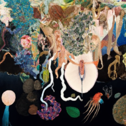

"Create a generative painting titled Mystical Abyss that captures the essence of the original artwork, Still Life from the Sea with Tentacles. Combine elements of traditional still life arrangements with fantastical tentacles emerging from the depths of the sea. Use vibrant colors and intricate details to bring the seashells, corals, and pearls to life. The tentacles should intertwine delicately with the still life objects, conveying a sense of enchantment and mystery. Set the composition against a dark backdrop to enhance the surreal atmosphere. Let your imagination run wild and explore the boundaries of reality and fantasy"
"Create a generative painting titled Enchanted Marine Symphony inspired by the original artwork, Still Life from the Sea with Tentacles. Incorporate traditional still life elements such as seashells, corals, and pearls arranged in an alluring composition. Introduce tentacles emerging from the depths of the sea, gracefully intertwining with the still life arrangement. Use a vibrant and harmonious color palette to depict the marine life and bring a sense of wonder and awe to the painting. Exude a dreamlike quality by incorporating subtle details and ethereal lighting. Let the artwork transport viewers to an otherworldly realm brimming with beauty and magic."
"a painting titled Surreal Seaside Symphony inspired by the original artwork, Still Life from the Sea with Tentacles. Create a captivating composition that combines traditional still life elements with imaginative tentacles emerging from the depths of the sea. Experiment with bold colors and dynamic brushwork to bring the seashells, corals, and pearls to life. The tentacles should elegantly intertwine with the still life objects, evoking a sense of mystery and fascination. Incorporate a contrasting backdrop that accentuates the surreal nature of the scene. Aim to create a painting that challenges reality and invites viewers to explore a mesmerizing world beneath the waves."
"Francisco de Zurbaran still life oil painting, hyper detailed, classical, still life with tentacles, bowl with sea creatures, anemones, tentacle, suckers, squid, coral overflowing clay bowl on wooden table"
"Pieter Claesz still life oil painting, hyper-realistic, dark background, hyper detailed, classical, still life with tentacles, bowl with shiny wet sea creatures, anemones, tentacle, suckers, squid, coral overflowing clay bowl on wooden table"
"Caravaggio still life oil painting, hyper-realistic, dark background, hyper detailed, classical, still life with tentacles, heavy cloth on table, bowl with shiny wet sea creatures, anemones, tentacle, suckers, squid, coral overflowing clay bowl on wooden table"

"Still life of with tentacles, heavy cloth on table, bowl with shiny wet sea creatures, anemones, tentacle, suckers, squid, coral overflowing clay bowl on wooden table, ultradetailed, ultra wide angle, 8K HD, Photorealistic, 4k, Trending on artstation, CGSociety and DeviantArt, oil painting in the style of Caravaggio",